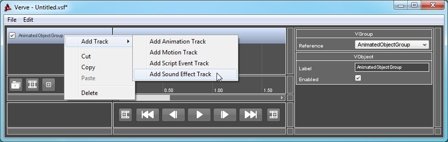
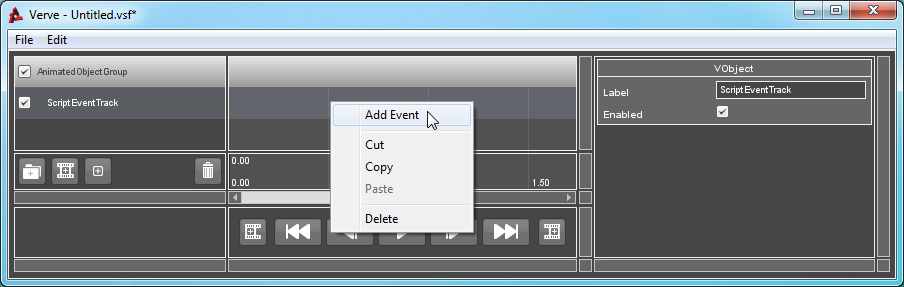
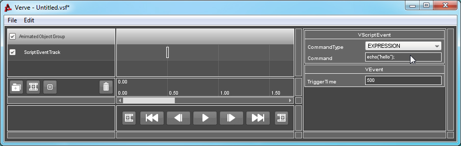

Tutorial : Torque Script Event
Objects: VScriptEventTrack, VScriptEvent
A Script Event will call or evaluate a command upon triggering. The command is defined in the Event's "Command" property. Be sure that you verify the validity of the command, as it is not observed by Verve. It can be difficult to identify any errors in the statement, but the most common are parse errors.
If a Script Event Track is added to a Scene Object Group (or derived class), triggered Events will call a method on the object instead of a global function. For example the expression, "Hello World", will evaluate something that looks like this:
// In Scene Object Group. %referenceObject.HelloWorld();
// Not in Scene Object Group. HelloWorld();
The above only affects Events that are set to "METHOD". If an Event is set to evaluate an "EXPRESSION", then the command is evaluated something like this:
eval( %command );
How to Use:
Right-Click on your Group, go to "Add Track" and select "Add Script Event Track".

Right-Click on the Track and select "Add Event".

Select the newly created Event. The Property List window will refresh and inspect the Event. Enter the command to be evaluated in the "Command" property. Note: Be sure to verify the validity of the command, as it is not observed by Verve.
